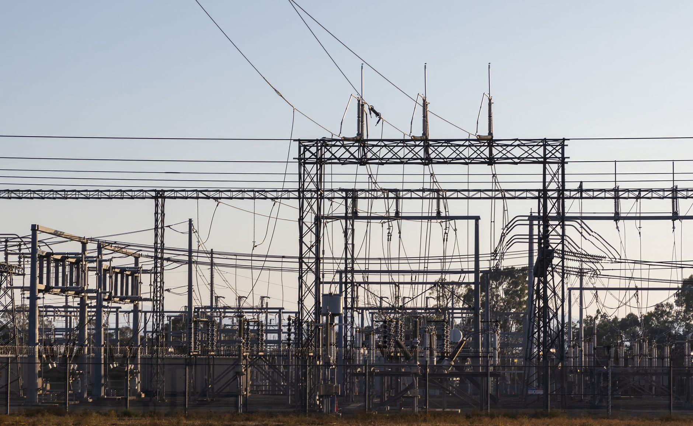

AI 팹 전력 수요, 한국 전력망 재설계 2026년 임계점

국내 AI 데이터센터 전력 수요는 2023년 약 1.2GW에서 2026년 3.8GW로 3배 이상 증가할 전망이다(한국전력 내부 추정). SK하이닉스 청주 M15X 팹은 풀가동 시 전력 소비량이 연간 4.2TWh로 중소 도시 한 곳의 연간 소비량에 맞먹는다. 2025년 착공한 삼성전자 평택 P5·P6 복합 팹이 가동되는 2027년에는 수도권 전력망에 최소 2.5GW 추가 부하가 걸릴 것으로 산업부는 추정하고 있다.
현행 제11차 전력수급기본계획(2024~2038)은 연평균 수요 증가율을 1.5%로 잡았다. 그러나 AI 서버 수요만으로 연간 전력 소비가 8~12% 추가 증가할 것이라는 KEPCO 연구원의 보정치가 반영되지 않았다. 이언주 의원은 국정감사에서 "현행 계획대로면 2026년 최대 전력 수요 대비 예비율이 법정 기준(15%) 이하로 떨어질 수 있다"고 지적했다.
전력 단가 상승은 소재 조달 비용에 직접 연동된다. 반도체 CVD·에칭 공정용 특수 가스(WF6, NF3, SiH4) 생산 시설은 24시간 항온 유지가 필수로 전력 비용이 제조 원가의 18~22%를 차지한다. 산업용 전기료가 10% 오르면 SK스페셜티·후성 등 공정가스 공급사의 kg당 단가가 5~7% 상승하고, 이는 팹 소재 구매 단가에 그대로 전가된다.
프랑스(EDF 기반 원전 70%), 미국 텍사스(에너지 규제 분리 구조), 일본(원전 재가동 9기)과 비교하면 한국은 전력 믹스 다변화 속도가 뒤처진다. 한국의 원전 이용률은 2024년 기준 73.4%로 프랑스(68.4%)보다 높지만 절대 설비 용량(25.8GW)이 AI·반도체 수요 증가분을 흡수하기에 부족하다. 한수원이 추진 중인 신한울 3·4호기 추가 건설 결정이 2026년 이전에 확정되지 않으면 전력 수급 리스크는 구조화된다.
전력 문제는 단순한 인프라 이슈가 아니라 소재 공급망 원가 구조 문제다. 전기료 상승은 특수가스·세정액·포토레지스트 등 에너지 집약형 소재의 국내 생산 원가를 직접 끌어올리고, 결국 외산 소재 가격경쟁력을 높여 국산화 수익성을 깎는다. 정부가 소부장 1,700억 원을 투자해도 전력 단가가 오르면 국산 소재의 원가 경쟁력 회복이 그만큼 더뎌진다.
AI 팹과 데이터센터의 전력 수요 충돌은 입지 결정에도 영향을 미친다. 삼성·SK가 미국 텍사스·애리조나에 신규 팹을 짓는 이유 중 하나가 전력 단가와 공급 안정성이다. 한국 내 전력 문제가 해결되지 않으면 소부장 기업의 생산 거점도 해외로 이동하는 간접 압력으로 작용하며, 내수 공급망 밀도 자체가 낮아질 수 있다.
전력 인프라 문제 심화 수혜는 역설적으로 분산 전력 솔루션 기업에 돌아간다. LS일렉트릭(ESS·변압기)과 효성중공업(HVDC 시스템)은 AI 팹 전용 전력망 구축 프로젝트 수주 가능성이 높아졌다. 효성중공업의 초고압 변압기 수주잔고는 2024년 말 기준 2조 1,000억 원으로 전년 대비 43% 증가했다.
SMR 기술을 보유한 두산에너빌리티는 팹 전용 소형 원전 공급 논의에서 선점 위치를 확보하고 있다. 마이크로소프트가 2028년 미국 TMI 원전 재가동 계약을 맺은 선례가 국내에도 확산될 경우, AI 팹 인근 SMR 설치 프로젝트의 첫 번째 수혜 기업이 된다.
국내 에너지 집약형 소재 기업(SK스페셜티, 후성, 솔브레인)은 전력 단가 상승의 직격탄을 맞는다. 후성의 2024년 영업이익률 7.2%는 전기료가 15% 추가 오를 경우 4%대로 하락하는 구조다. 장기 공급 계약을 맺은 팹 바이어에게 가격 전가가 어렵기 때문에 마진 압박은 고스란히 소재 기업이 흡수한다.
신규 팹 투자 대비 전력 인프라 확충이 지연되면 팹 가동 일정 자체가 밀린다. 삼성전자 P5 팹의 전력 수급 승인이 6~12개월 지연될 경우 HBM4 초도 양산 타임라인이 2027년에서 2028년으로 밀릴 가능성이 있으며, 이는 HBM 소재 공급사의 초도 발주 시점도 동일하게 이연된다.
AI 팹·데이터센터 인근 소부장 기업은 지금 당장 전력 구매 계약(PPA)을 검토해야 한다. RE100 의무화 및 전력 단가 상승 압력을 감안하면 5~10년짜리 장기 PPA를 현재 시점에 체결하는 것이 고정 원가 확보 측면에서 유리하다. 한국에너지공단의 기업 PPA 중개 플랫폼을 활용하면 중소 소부장 기업도 태양광·풍력 전력 공급사와 직접 계약이 가능하다.
소부장 기업 CFO라면 전력 단가 시나리오를 원가 모델에 반드시 반영해야 한다. 현행 산업용 전기료(kWh당 평균 110원) 기준 시나리오와 15%, 30% 상승 시나리오를 병행 작성해두지 않으면, 바이어와의 가격 협상에서 수동적 위치에 놓인다. 이미 일부 유럽 소재 기업은 전력 비용 연동 가격 조항(Energy Cost Adjustment Clause)을 장기 계약에 삽입하고 있다.
전남·충남 등 신규 AI 산업 클러스터 입지 선정에 전력 인프라를 최우선 기준으로 적용해야 한다. 전남의 경우 여수·광양 LNG 터미널과 연계한 분산 발전 인프라가 있고, 영광 원전(140만kW)이 인근에 위치해 있어 전력 공급 안정성이 상대적으로 높다. 앵커 팹을 유치하려는 지자체는 전력 공급 안정성 수치(예비율·정전 빈도)를 기업 유치 제안서에 정량화해서 제시해야 경쟁력이 생긴다.
실제 조달 현장에서는 — 반도체 팹의 전력 수급 불안이 가시화된 2025년 하반기부터 특수가스 공급 계약에 '전력 단가 연동 가격 조항' 요구가 처음 등장하기 시작했다. 바이어(팹)가 아닌 공급사(소재 기업)가 먼저 이 조항을 계약서에 요청하는 역전 현상이 나타나고 있으며, 이를 수용하는 팹과 거부하는 팹의 구분이 중장기 공급사 선정의 새로운 변수로 부상하고 있다.
이 포스팅은 쿠팡 파트너스 활동의 일환으로 수수료를 제공받습니다.